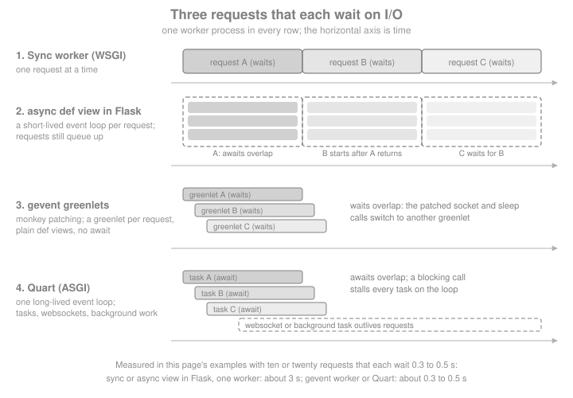

Async, gevent & Quart
|
This content was generated with the assistance of AI and should be verified against the official documentation before being relied on in production. |
This page is written against Flask 3.1.3, Werkzeug 3.1.9, asgiref 3.12.1, gevent 26.9.0, Gunicorn 26.2.0, Hypercorn
0.18.0, Quart 0.23.1 and Python 3.13, checked on 2026-10-07. Quart 0.23 needs Python 3.13 or newer; Flask itself runs
on older versions. Flask 3.2 is not released yet, and nothing on this page depends on it. Every example was executed
with those versions: most through Flask’s and Quart’s test clients, and the ones that need a real server (gevent,
Gunicorn, Hypercorn) as separate scripts against a loopback port, with a local fake standing in for every external
service. The question this page answers is the one every Flask developer meets sooner or later: the application waits
on other services (a metadata API, a database, a mail server), so how do I wait without wasting a worker? Flask has
four answers, and they are different in kind: async def views inside a WSGI worker, gevent greenlets, an ASGI server
in front of a WSGI app, and a different framework, Quart. The running example is the Bookshelf, which looks up book
metadata from a slow external catalogue service.
For the Python side of the story (threads, processes, asyncio, the GIL) see
Concurrency & Async in the Python Reference. For how an
async-first framework is built from the start, compare FastAPI.
Four Ways to Wait
A WSGI server hands a request to a worker (a process or a thread), and that worker is busy until the response is returned. If the view spends 90 percent of its time waiting for a remote service, 90 percent of the worker is idle, and the only way to serve more requests at once is to add workers. Each approach on this page attacks that waste in a different place.

| Model | What waits cheaply | What you write | Server |
|---|---|---|---|
Sync Flask |
Nothing: the worker blocks |
Plain |
Any WSGI server; scale with processes and threads |
|
Awaits inside one request |
|
The same WSGI server |
gevent |
Any patched blocking call, in many requests at once |
Plain |
Gunicorn or uWSGI gevent worker, or gevent’s own WSGI server |
Quart |
Awaits in many requests, plus websockets and background tasks |
|
An ASGI server such as Hypercorn |
Flask itself is a WSGI application (PEP 3333), the interface described in Introduction & Architecture. WSGI has no way to express "this request is suspended, run another one". Everything below either works around that limit (rows two and three), changes the server interface (WSGI to ASGI), or replaces the framework (Quart).
async def Views, Handlers and Hooks
Since Flask 2.0, routes, error handlers, before_request, after_request and teardown functions may be coroutine
functions, provided Flask is installed with the async extra. The extra pulls in asgiref, the library Flask uses to
bridge the sync and async worlds.
pip install "flask[async]"Source: Flask: Using async and await
The quotes keep shells such as zsh from reading the square brackets as a glob pattern. Without the extra, the first
request to an async def view fails with a RuntimeError that says to install Flask with the async extra.
A view becomes asynchronous when it is declared with async def; nothing else changes. The example below enriches a
book with metadata from three catalogue lookups that run at the same time, which is the situation where await earns
its keep: independent I/O inside one request. The lookup is a local fake (asyncio.sleep stands in for a network
call).
import asyncio
import threading
import time
from flask import Flask, jsonify, request
app = Flask(__name__)
async def catalogue_lookup(source: str, isbn: str) -> dict:
await asyncio.sleep(0.2) # local fake of a remote metadata service
return {"source": source, "isbn": isbn, "pages": 320}
@app.get("/books/<isbn>/enriched")
async def enriched(isbn: str):
results = await asyncio.gather(
catalogue_lookup("openlibrary-fake", isbn),
catalogue_lookup("worldcat-fake", isbn),
catalogue_lookup("library-fake", isbn),
)
in_main = threading.current_thread() is threading.main_thread()
return jsonify(sources=[r["source"] for r in results], path=request.path, ran_in_main_thread=in_main)
client = app.test_client()
start = time.perf_counter()
response = client.get("/books/9781234567890/enriched")
elapsed = time.perf_counter() - start
print(response.status_code, response.get_json())
assert elapsed < 0.5 # three 0.2 s lookups overlapped: about 0.2 s, not 0.6 sSource: Flask: Using async and await
The view finishes in about 0.2 seconds instead of 0.6, because asyncio.gather overlaps the three waits. The extra
output field shows something about the mechanism that the next section explains: the coroutine did not run in the
thread that handled the request, yet request.path was readable inside it.
Class-based views work the same way: View.dispatch_request and every HTTP method handler of a MethodView may be
coroutines (see Class-Based Views). Hooks, error handlers and teardown
functions are wrapped with the same machinery, so a single application can mix def and async def freely.
import asyncio
from flask import Flask, g, jsonify
from flask.views import MethodView
app = Flask(__name__)
events = []
@app.before_request
async def start_timer():
await asyncio.sleep(0) # a real app might await a session store here
g.audit = ["before_request"]
@app.after_request
async def add_header(response):
response.headers["X-Hooks"] = ",".join(g.audit)
return response
@app.teardown_request
async def finish(exc):
events.append("teardown")
@app.errorhandler(404)
async def missing(error):
await asyncio.sleep(0)
return jsonify(error="not found"), 404
class ShelfAPI(MethodView):
async def get(self, shelf: str):
await asyncio.sleep(0)
g.audit.append("view")
return jsonify(shelf=shelf)
app.add_url_rule("/shelves/<shelf>", view_func=ShelfAPI.as_view("shelf"))
client = app.test_client()
ok = client.get("/shelves/sci-fi")
print(ok.status_code, ok.headers["X-Hooks"], events)
print(client.get("/nope").get_json())Source: Flask: Using async and await
Signal receivers can be coroutines too, through Blinker’s async support; see Signals.
How It Works and Why It Is Not Faster
When a request reaches an async def view, Flask calls Flask.ensure_sync(), which returns plain functions
unchanged and wraps coroutine functions with Flask.async_to_sync(). That method is a thin layer over
asgiref.sync.async_to_sync: it starts an event loop in a thread, runs the coroutine to completion there, and the
worker waits for the result, then the response is returned like any other. The official page states the consequence
directly: Flask uses one worker for one request/response cycle, and each request ties up one worker even for async
views. The number of requests the application can handle at one time stays the same.
The practical rules that follow:
-
Async is not inherently faster. It helps when one request has several independent I/O waits (the
gatherabove). It does not help CPU-bound work, and it does not let one worker serve a second request while the first one waits. Each request also pays for starting and stopping an event loop, which is why the Flask documentation says Flask’s async support is less performant than async-first frameworks. -
The event loop is private to one request. Nothing created in one request, such as a connection pool bound to a loop, may be reused in the next one: the loop it belongs to is gone. Create such objects per request, or use a sync client.
-
Per-request context still works.
request,gandcurrent_appare context variables, and Flask copies the context into the loop, so they are available inside a coroutine. -
CPU or blocking calls inside the coroutine block that request’s loop, though not other requests, because other requests have their own workers. If a sync-only library (a legacy SDK) must be called from an
async defview,asyncio.to_thread()moves the call off the loop so that it can overlap with the other awaits.
The measurement below makes the first point concrete. The same view (a 0.3 second await) is served by Gunicorn with
one sync worker, and ten clients call it at once.
gunicorn -w 1 -b 127.0.0.1:8000 aapp:app # aapp.py: an async def view awaiting asyncio.sleep(0.3)10 requests answered in 3.05 s # about 10 x 0.3 s: the requests were served one after the otherThe next example calls a sync-only function from an async view with asyncio.to_thread, so that two blocking calls
overlap.
import asyncio
import time
from flask import Flask, jsonify
app = Flask(__name__)
def legacy_isbn_check(isbn: str) -> bool:
time.sleep(0.2) # a blocking SDK call
return isbn.startswith("978")
@app.get("/check")
async def check():
first, second = await asyncio.gather(
asyncio.to_thread(legacy_isbn_check, "9781234567890"),
asyncio.to_thread(legacy_isbn_check, "1234567890123"),
)
return jsonify(valid=[first, second])
client = app.test_client()
start = time.perf_counter()
print(client.get("/check").get_json())
assert time.perf_counter() - start < 0.35 # the two blocking calls overlappedSource: Python: asyncio.to_thread
No Background Tasks
The event loop stops when the async function returns, and every task that is still pending is cancelled. This is the
pitfall that catches people coming from async frameworks: asyncio.create_task() in a view does not give you "fire and
forget".
import asyncio
import time
from flask import Flask, jsonify
app = Flask(__name__)
finished = []
async def refresh_cover_cache():
await asyncio.sleep(0.2)
finished.append("covers") # never reached under Flask's per-request loop
@app.post("/covers/refresh")
async def refresh():
asyncio.create_task(refresh_cover_cache())
return jsonify(accepted=True), 202
client = app.test_client()
print(client.post("/covers/refresh").status_code)
time.sleep(0.5)
print(finished) # []: the task was cancelled when the view returned
assert finished == []Three ways out, in the order the official documentation prefers them:
-
Hand the work to a task queue. Celery or RQ run the job in another process, survive restarts and can retry; see Background Jobs, Celery & Email.
-
Serve Flask over ASGI with
WsgiToAsgi. The adapter keeps one event loop alive for the whole process, so tasks outlive the request (see Flask over ASGI). They are still lost if the process stops. -
Move to Quart, which has
add_background_taskand a long-lived loop (see Quart).
Plain threads are the book-era answer (the Flask Cookbook runs mail sending and similar work in a Thread, mentions
async / await and Quart in passing, and recommends Celery for anything serious). Threads work with both sync and
async views, but a thread has no application or request context, so the data it needs must be passed in explicitly, and
the work is lost when the process restarts. The sketch below runs a fresh event loop in a daemon thread.
import asyncio
import threading
from flask import Flask, jsonify
app = Flask(__name__)
finished = threading.Event()
async def refresh_cover_cache(isbns: list[str]):
await asyncio.sleep(0.1)
finished.set()
def run_in_thread(isbns: list[str]):
asyncio.run(refresh_cover_cache(isbns))
@app.post("/covers/refresh")
def refresh():
# pass plain data, never the request or current_app proxies
threading.Thread(target=run_in_thread, args=(["9781234567890"],), daemon=True).start()
return jsonify(accepted=True), 202
client = app.test_client()
print(client.post("/covers/refresh").status_code)
print(finished.wait(timeout=2))Source: Python: asyncio.run
The book idiom of sending mail from a threading.Thread started inside a view fails when the thread touches request,
current_app or g, because those proxies are bound to the context of the thread that created them. Either pass
the exact values the thread needs (the approach above), or push a context in the thread with
app.app_context() or the copy_current_request_context decorator shown in the gevent section.
ensure_sync, Decorators and Extensions
ensure_sync is the seam between the two worlds, and it is also where async support is lost. A decorator written for
sync views typically ends with return view(*args, **kwargs). Applied to an async def view, that call returns a
coroutine object that nobody awaits, and Flask answers with a 500 (Python also warns that the coroutine "was never
awaited"). The fix, which the official page recommends for extension authors, is to call the view through
current_app.ensure_sync.
from functools import wraps
from flask import Flask, current_app
app = Flask(__name__)
def naive(view):
@wraps(view)
def wrapper(*args, **kwargs):
return view(*args, **kwargs) # returns an un-awaited coroutine
return wrapper
def async_aware(view):
@wraps(view)
def wrapper(*args, **kwargs):
# works for def and async def views alike
return current_app.ensure_sync(view)(*args, **kwargs)
return wrapper
@app.get("/naive")
@naive
async def naive_view():
return "unreachable"
@app.get("/aware")
@async_aware
async def aware_view():
return "ok"
@app.get("/sync")
@async_aware
def sync_view():
return "ok too"
app.testing = False # let Flask turn the error into a 500 response
client = app.test_client()
print(client.get("/naive").status_code, client.get("/aware").status_code, client.get("/sync").status_code)Extensions that were written before async support arrived do not expect async views. Their decorators will not await
the function, and the helper functions they offer are not awaitable and will block the loop if called from a coroutine.
Check the extension’s changelog for async support. For example, Flask-Login’s login_required calls the view through
current_app.ensure_sync (confirmed in the installed 0.6.3 source), so it works on an async def view, while
extensions whose decorators do not call ensure_sync need a feature request or a thin wrapper of your own.
from flask import Flask
from flask_login import LoginManager, login_required
app = Flask(__name__)
app.config["SECRET_KEY"] = __import__("secrets").token_hex(16)
login_manager = LoginManager(app)
@login_manager.user_loader
def load_user(user_id):
return None # nobody is signed in in this demo
@app.get("/shelf")
@login_required
async def shelf():
return "my shelf"
app.testing = False
print(app.test_client().get("/shelf").status_code) # 401: login_required ran, and the async view was not reachedSource: Flask-Login: login_required
Flask supports only asyncio. To use another loop implementation, override Flask.ensure_sync or Flask.async_to_sync,
as the gevent section shows. Hook ordering and decorator patterns are in
Hooks & View Decorators.
gevent
gevent is the older route to the same goal, and Flask has worked with it since long before asyncio. It patches the
standard library so that blocking calls (sockets, time.sleep, locks, DNS) yield to other greenlets, lightweight
coroutines implemented by the greenlet library, instead of blocking the thread. The code stays plain def, with no
await anywhere. The Flask documentation calls it a reliable way to handle numerous, long-lived, concurrent
connections, and notes that it relies on gevent’s and greenlet’s low-level manipulation of the interpreter. It is not
the same thing as async / await or the ASGI specification.
Monkey patching
The patching must be applied as early as possible, before anything imports socket, ssl, threading or time.
Putting it at the very top of the entry module (or the top package’s __init__.py) is the documented approach. If
a module that holds a reference to an unpatched function is imported earlier, that reference keeps blocking.
# norun (patches the whole process: run as a script, see the loopback test below)
import gevent.monkey
gevent.monkey.patch_all()
import time
import gevent
from flask import Flask, copy_current_request_context, jsonify, request
app = Flask(__name__)
audit = []
def slow_lookup(isbn):
time.sleep(0.5) # patched: other greenlets run while this one sleeps
return {"isbn": isbn}
@app.get("/lookup/<isbn>")
def lookup(isbn):
return jsonify(slow_lookup(isbn))
@app.post("/books")
def create_book():
@copy_current_request_context
def audit_later():
gevent.sleep(0.1)
audit.append(request.path) # request is still available here
gevent.spawn(audit_later)
return jsonify(created=True), 201Source: Flask: Async with Gevent
Served by gevent’s own WSGIServer on a loopback port and called by twenty greenlets at once, the /lookup view
answered all twenty requests in 0.54 seconds, where one sync worker needs ten seconds for twenty half-second waits. The
audit entry appeared after the response, with request.path still readable.
gevent.spawn() starts a concurrent task from inside a view. A spawned function runs after the view returns, so the
request context is gone by then. The documentation says to decorate it with stream_with_context() or
copy_current_request_context() if it needs request or other context globals, and also says to prefer passing the exact
data needed instead of using either decorator. copy_current_request_context copies the request context (including the
session) when the function is decorated and pushes the copy when it is called; it raises a RuntimeError outside a
request. The example above uses it to show the mechanism, and the same decorator fixes the book-era "send mail from a
thread" idiom.
Gunicorn gevent workers
In production, do not run gevent’s WSGIServer directly. The Flask documentation prefers Gunicorn or uWSGI with a gevent
worker, which provides a more configurable and production-tested server. With Gunicorn it is one option, -k gevent
(--worker-class gevent), and the application module does not need to call patch_all itself: the worker patches the
process early when it boots (a plain time.sleep view overlapped under -k gevent in a test with no patching
in the application module).
pip install gunicorn gevent
gunicorn -k gevent -w 1 -b 127.0.0.1:8000 'hello:create_app()'With one gevent worker and a view that sleeps 0.5 seconds, twenty simultaneous requests were answered in 0.54 seconds. The
default -w 1 is usually too few for production: use one gevent worker per CPU core, and let each worker multiplex its
connections. The number of simultaneous connections per worker is worker_connections (default 1000).
Greenlets only help with I/O waits: a CPU-bound view still occupies its whole process. greenlet 1.0 or newer is
required, and PyPy needs 7.3.7 or newer. Process supervision, reverse proxies and the other WSGI servers belong to the
deployment page of this section.
Pitfalls
-
Everything that blocks must be patched or gevent-aware. A C extension or database driver that blocks inside C code (a driver without a gevent-compatible mode) stalls every greenlet in the worker. PostgreSQL’s
psycopg2needs thepsycogreenhelper to cooperate; check each driver’s documentation. -
Thread-locals and globals behave differently. After
patch_allthreading.localbecomes greenlet-local, which is what Flask’s contextvars-based proxies need. Code that assumes a worker handles one request at a time (module-level state mutated per request) breaks. -
gevent does not mix with Flask’s built-in async support. Patching does not interact well with the per-request loop that
async_to_syncstarts. If both are needed, overrideFlask.async_to_syncto run coroutines on a loop that lives in a greenlet, as the official page shows.
# norun (patches the whole process: needs Python 3.13 for asyncio.EventLoop)
import gevent.monkey
gevent.monkey.patch_all()
import asyncio
import gevent
from flask import Flask, request
loop = asyncio.EventLoop()
gevent.spawn(loop.run_forever)
class GeventFlask(Flask):
def async_to_sync(self, func):
def run(*args, **kwargs):
coro = func(*args, **kwargs)
future = asyncio.run_coroutine_threadsafe(coro, loop)
return future.result()
return run
app = GeventFlask(__name__)
@app.get("/")
async def greet():
await asyncio.sleep(0.2)
return f"Hello, {request.args.get('name', 'World')}!"Ten simultaneous requests to this app, served by gevent’s WSGIServer, took 0.23 seconds. asyncio.EventLoop exists from
Python 3.13; on older versions use asyncio.new_event_loop(). The official page also covers libuv as an alternative
gevent loop (set gevent.config.loop = "libuv" before patch_all), and recommends gevent’s own libuv support rather than
uvloop. Treat these combinations as limited: the page itself warns they may have limitations.
eventlet is retired
eventlet used to be the other popular green-thread library, and several books and tutorials (including the
Flask-SocketIO ones) show eventlet.monkey_patch() and the Gunicorn -k eventlet worker. The Flask documentation’s
eventlet page now says plainly that eventlet is no longer maintained and to use gevent instead. When you meet
eventlet code, replace eventlet.monkey_patch() with gevent.monkey.patch_all() and -k eventlet with -k gevent.
Flask over ASGI with WsgiToAsgi
ASGI is the asynchronous successor to WSGI: a server calls the application with an event loop running, so one process
can hold thousands of open connections, long-lived requests and websockets. A WSGI application such as Flask cannot be
called by an ASGI server directly, so a WSGI-to-ASGI adapter sits between them. The Flask documentation recommends
asgiref’s WsgiToAsgi because it integrates with the event loop used for Flask’s own async support.
# norun (served by Hypercorn, see the command below)
import asyncio
from asgiref.wsgi import WsgiToAsgi
from flask import Flask, jsonify
app = Flask(__name__)
finished = []
async def refresh_cover_cache():
await asyncio.sleep(0.3)
finished.append("covers")
@app.post("/covers/refresh")
async def refresh():
asyncio.create_task(refresh_cover_cache())
return jsonify(accepted=True), 202
@app.get("/covers/status")
def status():
return jsonify(finished=finished)
asgi_app = WsgiToAsgi(app)Source: Flask: ASGI
pip install "flask[async]" hypercorn
hypercorn module:asgi_appSource: Flask: ASGI
Running the app above under Hypercorn, the POST returned 202 and a GET /covers/status call 0.6 seconds later listed
covers: the background task survived the request, which the per-request loop of a normal WSGI deployment would have
cancelled. Hypercorn logs a warning that the ASGI framework (the adapter) does not support the lifespan protocol, which is
harmless; it only means no startup or shutdown hooks reach Flask.
What the adapter does and does not change:
-
WSGI calls are still synchronous. A plain
defview runs in a thread from the adapter’s executor, so it does not block the loop, but it also does not become more concurrent than a thread pool. Anasync defview runs on the long-lived loop, so its awaits overlap with those of other requests. -
There are no websockets and no ASGI-native features (lifespan, server push): Flask has no API for them. The adapter is a deployment bridge, not a path to real-time features.
-
A background task is bound to the process. It is lost on restart, and nothing retries it, so a task queue remains the answer for work that must not be lost.
This keeps the code unchanged while gaining background tasks and an async-native server, and it is the smallest step toward an ASGI deployment. When the project wants websockets, async extensions or async database drivers across the whole request path, the honest move is Quart.
Quart
Quart is a reimplementation of the Flask API on top of ASGI, hosted by Pallets. It builds on Flask’s Sans-IO classes and asyncio, so most Flask code reads the same, but everything that
touches I/O is a coroutine. The Flask documentation points to it for codebases that are mostly async: Quart handles many
concurrent requests, long-running requests and websockets without extra worker processes or threads.
When to switch
| Stay on Flask when | Move to Quart when |
|---|---|
The app is mostly sync (SQLAlchemy sessions, blocking SDKs) and scales by adding workers |
Most work is I/O against async libraries ( |
You depend on Flask extensions with no async story |
You need websockets, server-sent events with many clients, or long-lived connections |
Background work can go to Celery or RQ |
You want |
gevent already solves the concurrency problem for you |
You want an ASGI server and its lifespan protocol (startup and shutdown hooks) |
If the application is mostly sync, or the team prefers plain def, gevent often delivers the concurrency with far less
rewriting. If the application is greenfield and async-first, the other mainstream choice is
FastAPI. The official documentation puts it this way: deciding
between gevent, Quart or something else is ultimately about the specific needs of the project.
The migration recipe
The Quart project documents Flask migration as a short mechanical recipe, and the table below is the recipe in order.
| Step | Change |
|---|---|
1 |
Install |
2 |
Declare every route, hook and error handler as |
3 |
|
4 |
|
5 |
Make tests async: |
6 |
Replace the WSGI server with an ASGI one (Hypercorn, or |
7 |
Replace extensions that block, or check whether |
Source: Quart: Migrating from Flask
A Flask view and its Quart equivalent show the whole change.
# Flask
from flask import Flask, jsonify, request
flask_app = Flask(__name__)
shelves = {}
@flask_app.post("/shelves")
def create_shelf():
data = request.get_json()
shelves[data["name"]] = []
return jsonify(data), 201
flask_client = flask_app.test_client()
print(flask_client.post("/shelves", json={"name": "to-read"}).status_code)Source: Quart: Migrating from Flask
# Quart: the same view with async def and await
import asyncio
from quart import Quart, jsonify, request
quart_app = Quart(__name__)
shelves = {}
@quart_app.post("/shelves")
async def create_shelf():
data = await request.get_json()
shelves[data["name"]] = []
return jsonify(data), 201
async def main():
client = quart_app.test_client()
response = await client.post("/shelves", json={"name": "to-read"})
print(response.status_code, await response.get_json())
asyncio.run(main())Source: Quart: Migrating from Flask
What changes
Beyond the await keywords, a Quart application differs from a Flask one in these ways.
-
Lifespan and background tasks.
before_serving,while_servingandafter_servinghooks run once at server start and stop (create a connection pool inbefore_serving, close it inafter_serving), andapp.add_background_task()runs a coroutine on the application’s long-lived loop, which is exactly what Flask’s per-request loop cannot do. -
Websockets.
@app.websocket("/path")declares a websocket endpoint, and awebsocketglobal (likerequest) givesawait websocket.receive()andawait websocket.send(...). Websocket depth (authentication, scaling, rooms) is outside this page; Flask’s own options (flask-sock, Flask-SocketIO) are in the streaming page of this section. -
Sync views still work. A plain
defview in Quart runs in a thread pool (throughsync_to_async), so it does not block the loop. -
A blocking call inside
async defblocks everything. There is only one loop. Offload the call withasyncio.to_thread()orloop.run_in_executor(). -
The server is ASGI. Development:
quart --app hello run --debug(the CLI offersrun,routesandshell) orapp.run(). Production: Hypercorn (hypercorn hello:app;-wsets workers and-bthe bind address), which supports HTTP/1, HTTP/2 and websockets. -
Test client. Awaitable, with
async with client.websocket("/path") as wsfor websockets, andapp.test_app()as an async context manager to run the startup and shutdown hooks. -
Extensions. Flask extensions are written for WSGI and for blocking calls. Some work through the
Quart-Flask-Patchpackage, which patches Quart to behave as Flask (it was part of Quart until 0.19.0), and many popular concerns (authentication, schemas, CORS) have Quart-native equivalents. Check each extension.
The next example shows these Quart features together: a startup hook, a background task, awaited request data, a rendered template and a websocket, all driven by the test client.
import asyncio
from quart import Quart, jsonify, render_template_string, request, websocket
app = Quart(__name__)
books = {}
indexed = []
@app.before_serving
async def startup():
app.config["READY"] = True # open pools and clients here; close them in after_serving
async def index_book(isbn):
await asyncio.sleep(0.1)
indexed.append(isbn)
@app.post("/books")
async def create_book():
data = await request.get_json()
books[data["isbn"]] = data
app.add_background_task(index_book, data["isbn"]) # runs after the response, on the app's loop
return jsonify(data), 201
@app.post("/form")
async def form():
return jsonify(dict(await request.form))
@app.get("/page")
async def page():
return await render_template_string("<h1>{{ title }}</h1>", title="Bookshelf")
@app.websocket("/ws/echo")
async def echo():
while True:
message = await websocket.receive()
await websocket.send(f"echo: {message}")
async def main():
async with app.test_app() as test_app:
client = test_app.test_client()
response = await client.post("/books", json={"isbn": "9781234567890", "title": "Dune"})
print(response.status_code, await response.get_json())
print(await (await client.post("/form", form={"shelf": "to-read"})).get_json())
print(await (await client.get("/page")).get_data(as_text=True))
async with client.websocket("/ws/echo") as ws:
await ws.send("hello")
print(await ws.receive())
print(indexed)
asyncio.run(main())Source: Quart: Websockets
The final example proves the blocking pitfall. Five concurrent requests each call a blocking function that takes 0.2
seconds. In the async def view that calls it directly the event loop is stalled and the requests are served one after
the other (about 1.0 s); with asyncio.to_thread, or as a plain def view, they overlap (about 0.2 s).
import asyncio
import time
from quart import Quart
app = Quart(__name__)
def read_isbn_registry():
time.sleep(0.2) # a blocking driver or file read
return "registry"
@app.get("/blocking")
async def blocking():
return read_isbn_registry() # stalls the whole event loop
@app.get("/offloaded")
async def offloaded():
return await asyncio.to_thread(read_isbn_registry)
@app.get("/plain")
def plain():
return read_isbn_registry() # a plain def runs in a thread pool
async def timed(client, path):
start = time.perf_counter()
await asyncio.gather(*(client.get(path) for _ in range(5)))
return round(time.perf_counter() - start, 1)
async def main():
client = app.test_client()
for path in ("/blocking", "/offloaded", "/plain"):
print(path, await timed(client, path), "s for 5 concurrent requests")
asyncio.run(main())Source: Quart documentation
On a live Quart server the same view overlaps for real: ten simultaneous requests to an async def view that awaits
asyncio.sleep(0.3) were answered by Hypercorn in 0.33 seconds, against 3.05 seconds for the same view on one sync
Gunicorn worker.
pip install quart hypercorn
quart --app hello run --debug # development server with the reloader; never expose --debug publicly
hypercorn hello:app --bind 127.0.0.1:8000 --workers 2Source: Quart: Quickstart
Production notes carry over from Flask. Put a reverse proxy in front, bind to loopback, never run the development server or the debug mode in production, and keep secrets in the environment or in a secret store. The Flask side of the same advice is in Security Considerations.
Choosing Between Them
| Need | Best fit | Why | Cost |
|---|---|---|---|
Several independent waits in one request |
|
No new server, no new dependency beyond |
A loop per request; no extra capacity |
Many slow clients on an existing sync code base |
gevent worker |
Plain |
Monkey patching, driver compatibility |
Background task or async-native server with Flask unchanged |
|
One long-lived loop |
No websockets; tasks are not durable |
Websockets, long-lived streams, async libraries throughout |
Quart |
Native ASGI, lifespan, background tasks |
Rewrite with |
Durable background work |
Celery or RQ |
Survives restarts, retries |
An extra service |
Where the Books Are Outdated
-
The Flask Cookbook chapter on additional tips shows background work with threads and mentions
async/awaitand Quart. Treat that as the starting point: today Flask has first-classasync defsupport (2.0 and later), its limits are documented (per-request loop, no background tasks), and a thread started from a view still has no context. -
Book-era recipes that send mail from a
threading.Threadfail when the thread readsrequestorcurrent_app; pass the data explicitly or usecopy_current_request_context/app.app_context(), or better a task queue. -
Examples and tutorials that use eventlet (
eventlet.monkey_patch(),-k eventlet) are obsolete because eventlet is no longer maintained; use gevent. -
Claims that async views are impossible in Flask predate Flask 2.0 (2021); claims that they make Flask faster are wrong.